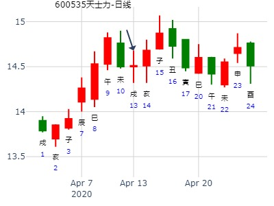
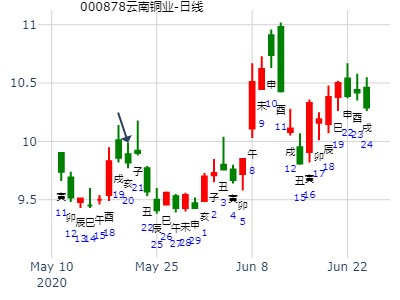
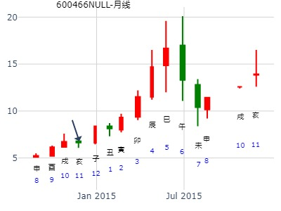

主帖标题: [原创]预测2月12-----16日大盘股市走向
周一:公历时间：2007年2月11日14时48分 星期日
干支：丁亥年 壬寅月 丙子日 乙未时 (旬空：申酉)
神煞：驿马—寅 桃花—酉 日禄—巳 贵人—酉，亥
乾宫：天风姤
青龙 ▅▅▅▅▅ 父母壬戌土
玄武 ▅▅▅▅▅ 兄弟壬申金
白虎 ▅▅▅▅▅ 官鬼壬午火 应
螣蛇 ▅▅▅▅▅ 兄弟辛酉金
勾陈 妻财甲寅木 ▅▅▅▅▅ 子孙辛亥水
朱雀 ▅▅ ▅▅ 父母辛丑土 世
下跌无疑;其中上海股市开盘略涨后下挫明显,中午前上涨回来;下午再次下挫.全天下跌幅度虽然有限,但收盘也有20----30点的下挫幅度.
占事：全国平均房价未来五年走势？
排卦：元亨网六爻在线排盘系统 http://www.china95.net
公历起卦时间：2016年2月24日16时58分 (在线摇卦)
干支：丙申年 庚寅月 丙子日 丙申时 （日空：申酉）
姤静卦
青龙 ▅▅▅▅▅ 父母戌土
玄武 ▅▅▅▅▅ 兄弟申金
白虎 ▅▅▅▅▅ 官鬼午火 应
腾蛇 ▅▅▅▅▅ 兄弟酉金
勾陈 妻财寅木▅▅▅▅▅ 子孙亥水
朱雀 ▅▅ ▅▅ 父母丑土 世
天风姤，2009.3.23－3.27，大盘周卦，中阳线。空下伏神
方式：手工指定
公历：2009年3月22日11时2分 星期日 北京时间
干支：己丑年 丁卯月 丙寅日 甲午时 （戌亥空）
卯月 丙寅日 （旬空：戌亥）
乾：天风姤
青龙 ▅▅▅▅▅ 父母戌土
玄武 ▅▅▅▅▅ 兄弟申金
白虎 ▅▅▅▅▅ 官鬼午火 应
螣蛇 ▅▅▅▅▅ 兄弟酉金
勾陈 妻财寅木 ▅▅▅▅▅ 子孙亥水
朱雀 ▅▅ ▅▅ 父母丑土 世
巳日冲飞露伏,反大跌. 空下伏神易于引拔。冲飞之日，也是子孙日破之日。故跌。亥水旬空，冲飞这天反而冲实，而伏神被牢牢压住，故跌。
出空的亥日低开长阳。莫非是亥生寅木的原因？
马后炮：按青岚讲法，飞来生伏不可被冲。
占事：002741光华科技今天涨跌
排卦：元亨利贞网六爻在线排盘系统 http://www.china95.net
公历起卦时间：2016年3月8日6时17分 (电脑自动)
干支：丙申年 辛卯月 己丑日 丁卯时 （日空：午未）
神煞：驿马－亥 桃花－午 日禄－午 贵人－子，申
乾宫：天风姤 乾宫：天风姤
勾陈 父母壬戌土 ▅▅▅▅▅ 父母壬戌土 ▅▅▅▅▅
朱雀 兄弟壬申金 ▅▅▅▅▅ 兄弟壬申金 ▅▅▅▅▅
青龙 官鬼壬午火 ▅▅▅▅▅ 应 官鬼壬午火 ▅▅▅▅▅ 应
玄武 兄弟辛酉金 ▅▅▅▅▅ 兄弟辛酉金 ▅▅▅▅▅
白虎 妻财甲寅木 子孙辛亥水 ▅▅▅▅▅ 子孙辛亥水 ▅▅▅▅▅
腾蛇 父母辛丑土 ▅▅ ▅▅ 世 父母辛丑土 ▅▅ ▅▅ 世
主帖标题: 试测上证辛丑年寅卯辰月哪月顶？
上证辛丑年寅卯辰月哪月顶？
公历起卦时间：2021年3月12日9时54分 (电脑自动)
干支：辛丑年 辛卯月 己未日 己巳时 （日空：子丑）
神煞：驿马－巳 桃花－子 日禄－午 贵人－子，申
乾宫：天风姤
勾陈 父母壬戌土 ▅▅▅▅▅
朱雀 兄弟壬申金 ▅▅▅▅▅
青龙 官鬼壬午火 ▅▅▅▅▅ 应
玄武 兄弟辛酉金 ▅▅▅▅▅
白虎 妻财甲寅木 子孙辛亥水 ▅▅▅▅▅
螣蛇 父母辛丑土 ▅▅ ▅▅ 世
天风姤，问有色大行情何时来？
时间: 2015-04-13
干支: 乙未年庚辰月己未日 (旬空: 子丑 )
姤静卦
勾陈 ▅▅▅▅▅ 父母戌土
朱雀 ▅▅▅▅▅ 兄弟申金
青龙 ▅▅▅▅▅ 官鬼午火 应
玄武 ▅▅▅▅▅ 兄弟酉金
白虎 妻财寅木▅▅▅▅▅ 子孙亥水
腾蛇 ▅▅ ▅▅ 父母丑土 世
举例江铜：巳月冲飞露伏，还能涨。午月官生父母就大跌了。
丑月父母持世，仍是大跌。寅月出伏，开涨。
主帖标题: 十日内000001运行趋势(五角梅花硬币卦)
公历：2016年4月23日5时59分
干支：丙申年 壬辰月 乙亥日 卯时 日空：申酉
姓名：上证指 性别：男 出生年：
占事：未来十日内,A股上证指数000001运行趋势变化怎样?
天 风 姤
玄武 ━━━ 父母壬戌
白虎 ━━━ 兄弟壬申
螣蛇 应 ━━━ 官鬼壬午
勾陈 ━━━ 兄弟辛酉
朱雀 妻财甲寅 ━━━ 子孙辛亥
青龙 世 ━ ━ 父母辛丑
主帖标题: 逢周四六日每天免费预测一个炒股卦，随缘先到先测
求测人：某人，男，庚申(1980年)，其它方式(起卦方式)
占问事宜：财运
公历：2016年4月28日10时0分，星期四。
干支：丙申年 壬辰月 庚辰日 辛巳时 (卦身：午)
主变卦 天风姤(乾宫) [空亡:申、酉]
螣蛇 ▅▅▅▅▅ 父母壬戌土
勾陈 ▅▅▅▅▅ 兄弟壬申金
朱雀 ▅▅▅▅▅ 官鬼壬午火 应
青龙 ▅▅▅▅▅ 兄弟辛酉金
玄武 妻财甲寅木 ▅▅▅▅▅ 子孙辛亥水
白虎 ▅▅ ▅▅ 父母辛丑土 世
蒙草抗旱，伟星新材，老板电器，中直股份，中国国航，首创股份，哪个在一个月内涨最好：少阴，少阳，少阳，少阳，少阳，少阳
2017年4月10日22时3分
干支：丁酉年 甲辰月 丁卯日 辛亥时 （日空：戌亥）
神煞：驿马－巳 桃花－子 日禄－午 贵人－酉，亥
乾宫：天风姤 乾宫：天风姤
六神 伏神 本 卦 变 卦
青龙 父母壬戌土 ▅▅▅▅▅ 父母壬戌土 ▅▅▅▅▅
玄武 兄弟壬申金 ▅▅▅▅▅ 兄弟壬申金 ▅▅▅▅▅
白虎 官鬼壬午火 ▅▅▅▅▅ 应 官鬼壬午火 ▅▅▅▅▅ 应
腾蛇 兄弟辛酉金 ▅▅▅▅▅ 兄弟辛酉金 ▅▅▅▅▅
勾陈 妻财甲寅木 子孙辛亥水 ▅▅▅▅▅ 子孙辛亥水 ▅▅▅▅▅
朱雀 父母辛丑土 ▅▅ ▅▅ 世 父母辛丑土 ▅▅ ▅▅ 世
以下三个股都是肉手拿铜钱 -600535
庚子 庚辰 甲申 壬申 (午未空) --(2020/04/11 16:23:44)
天风姤
玄武 父母戌土 ／
白虎 兄弟壬申 ／
腾蛇 官鬼午火 ／ 应
勾陈 兄弟酉金 ／
妻财甲寅：朱雀 子孙亥水 ／
青龙 父母丑土 ∥ 乾

姤静卦,300418本周是否单边下跌？ 王
时间: 2023-04-10
干支: 癸卯年丙辰月戊戌日 (旬空: 辰巳 )
姤静卦
朱雀 ▅▅▅▅▅ 父母戌土
青龙 ▅▅▅▅▅ 兄弟申金
玄武 ▅▅▅▅▅ 官鬼午火 应
白虎 ▅▅▅▅▅ 兄弟酉金
腾蛇 妻财寅木▅▅▅▅▅ 子孙亥水
勾陈 ▅▅ ▅▅ 父母丑土 世
女壮，勿用取女。
彖︰姤，遇也，柔遇刚也。勿用取女，不可与长也。天地相遇，品物咸章也；刚遇中正，天下大行也，姤之时义大矣哉。
测2011年巳月大盘走势？得月卦姤卦，静卦。?
财甲木伏藏，月休日克。?子孙亥水月破日生，全月无力。跌。
公历起卦时间：2011年5月6日19时36分 (手工指定)
干支：辛卯年 癸巳月 辛酉日 戊戌时 （日空：子丑）
姤静卦
腾蛇 ▅▅▅▅▅ 父母戌土
勾陈 ▅▅▅▅▅ 兄弟申金
朱雀 ▅▅▅▅▅ 官鬼午火 应
青龙 ▅▅▅▅▅ 兄弟酉金
玄武 妻财寅木▅▅▅▅▅ 子孙亥水
白虎 ▅▅ ▅▅ 父母丑土 世
原神子孙月破。以跌为主。
23日寅出伏反而大跌（因动态旬空申酉空，寅冲了申的空，故大跌）
青岚研究OK，飞神是伏神原神时，不能破与冲。
占事：上证指数近二周走势？
公历起卦时间：2015年5月25日21时34分 (阿晖在线摇卦)
干支：乙未年 辛巳月 辛丑日 己亥时 （日空：辰巳）
乾宫：天风姤 乾宫：天风姤
六神 伏神 本 卦 变 卦
腾蛇 父母壬戌土 ▅▅▅▅▅ 父母壬戌土 ▅▅▅▅▅
勾陈 兄弟壬申金 ▅▅▅▅▅ 兄弟壬申金 ▅▅▅▅▅
朱雀 官鬼壬午火 ▅▅▅▅▅ 应 官鬼壬午火 ▅▅▅▅▅ 应
青龙 兄弟辛酉金 ▅▅▅▅▅ 兄弟辛酉金 ▅▅▅▅▅
玄武 妻财甲寅木 子孙辛亥水 ▅▅▅▅▅ 子孙辛亥水 ▅▅▅▅▅
白虎 父母辛丑土 ▅▅ ▅▅ 世 父母辛丑土 ▅▅ ▅▅ 世
云南铜业何月涨停？
出生：2020 年 性别：男 占事：没填
排卦：元亨利贞网六爻在线排盘系统 https://www.suan98.com
公历起卦时间：2020年5月20日14时20分 (电脑自动)
干支：庚子年 辛巳月 癸亥日 己未时 （日空：子丑）
乾宫：天风姤 乾宫：天风姤
六神 伏神 本 卦 变 卦
白虎 父母壬戌土 ▅▅▅▅▅ 父母壬戌土 ▅▅▅▅▅
螣蛇 兄弟壬申金 ▅▅▅▅▅ 兄弟壬申金 ▅▅▅▅▅
勾陈 官鬼壬午火 ▅▅▅▅▅ 应 官鬼壬午火 ▅▅▅▅▅ 应
朱雀 兄弟辛酉金 ▅▅▅▅▅ 兄弟辛酉金 ▅▅▅▅▅
青龙 妻财甲寅木 子孙辛亥水 ▅▅▅▅▅ 子孙辛亥水 ▅▅▅▅▅
玄武 父母辛丑土 ▅▅ ▅▅ 世 父母辛丑土 ▅▅ ▅▅ 世

注：按贴主唐龙的习惯，应该习惯于问何日涨停？
申月上证大盘月卦
公历时间：2021年8月8日11时29分 农历时间：辛丑年 七月初一日午时
干 支：辛丑年 丙申月 戊子日 戊午时
旬 空：辰巳 辰巳 午未 子丑
乾宫：天风姤
六神 伏 神 【本 卦】
朱雀 ▄▄▄▄▄ 父母壬戌土
青龙 ▄▄▄▄▄ 兄弟壬申金
玄武 ▄▄▄▄▄ 官鬼壬午火 应
白虎 ▄▄▄▄▄ 兄弟辛酉金
螣蛇 妻财甲寅木 ▄▄▄▄▄ 子孙辛亥水
勾陈 ▄▄ ▄▄ 父母辛丑土 世
又走极端了，没动爻了静卦
下周A股整体？
时间: 2022-08-26 12时26分
干支: 壬寅年戊申月辛亥日 (旬空: 寅卯 )
姤静卦
腾蛇 ▅▅▅▅▅ 父母戌土
勾陈 ▅▅▅▅▅ 兄弟申金
朱雀 ▅▅▅▅▅ 官鬼午火 应
青龙 ▅▅▅▅▅ 兄弟酉金
玄武 妻财寅木▅▅▅▅▅ 子孙亥水
白虎 ▅▅ ▅▅ 父母丑土 世
主帖标题: 2015年10月大盘涨跌卦
占事：2015年10月大盘涨跌？
公历起卦时间：2015年9月30日16时10分 (手工指定)
干支：乙未年 乙酉月 己酉日 壬申时 （日空：寅卯）
乾宫：天风姤
六神 伏神 本 卦
勾陈 父母壬戌土 ▅▅▅▅▅
朱雀 兄弟壬申金 ▅▅▅▅▅
青龙 官鬼壬午火 ▅▅▅▅▅ 应
玄武 兄弟辛酉金 ▅▅▅▅▅
白虎 妻财甲寅木 子孙辛亥水 ▅▅▅▅▅
腾蛇 父母辛丑土 ▅▅ ▅▅ 世
弱极？
主帖标题: 新野纺织[002087]，未来走势？
新野纺织[002087]何月买入得财？
排卦：元亨利贞网六爻在线排盘系统 http://www.china95.net
公历起卦时间：2007年10月3日9时59分 (手工指定)
干支：丁亥年 己酉月 庚午日 辛巳时 （日空：戌亥）
乾宫：天风姤
六神 伏神 本 卦
腾蛇 父母壬戌土 ▅▅▅▅▅
勾陈 兄弟壬申金 ▅▅▅▅▅
朱雀 官鬼壬午火 ▅▅▅▅▅ 应
青龙 兄弟辛酉金 ▅▅▅▅▅
玄武 妻财甲寅木 子孙辛亥水 ▅▅▅▅▅
白虎 父母辛丑土 ▅▅ ▅▅ 世
主帖标题: 测 I F 1403 下周（21日------25日） 是涨是跌？
I F 1403 下周（21日------25日） 是涨是跌？
起卦方式：制钱摇卦 周易天地
公历时间：2013年10月20日8时0分
干支：癸巳年 壬戌月 己未日 戊辰时
旬空：午未 子丑 子丑 戌亥
神煞：驿马─巳 桃花─子 日禄─午 贵人─子，申
乾宫：天风姤
六神 伏 神 【本 卦】
勾陈 ▄▄▄▄▄ 父母壬戌土
朱雀 ▄▄▄▄▄ 兄弟壬申金
青龙 ▄▄▄▄▄ 官鬼壬午火 应
玄武 ▄▄▄▄▄ 兄弟辛酉金
白虎 妻财甲寅木 ▄▄▄▄▄ 子孙辛亥水
螣蛇 ▄▄ ▄▄ 父母辛丑土 世
判断下周行情结果： 下跌。
占事：下半年大盘走势如何？ 王
起卦方式：手动摇卦
公历时间：2014年10月12日11时49分
干 支：甲午年 甲戌月 丙辰日 甲午时
旬 空：辰巳 申酉 (子丑) 辰巳
乾宫：天风姤
六神 伏 神 【本 卦】
青龙 ▄▄▄▄▄ 父母壬戌土
玄武 ▄▄▄▄▄ 兄弟壬申金
白虎 ▄▄▄▄▄ 官鬼壬午火 应
螣蛇 ▄▄▄▄▄ 兄弟辛酉金
勾陈 妻财甲寅木 ▄▄▄▄▄ 子孙辛亥水
朱雀 ▄▄ ▄▄ 父母辛丑土 世
父母爻暗动，本月怕跌。戌月辰日摇卦，却是大涨。
主帖标题: 手摇 医药etf 10月17日-21日周卦
公历：2022年10月16日22时51分，星期日。
神煞：驿马-申 桃花-卯 干禄-亥 贵人-卯、巳
干支：壬寅年 庚戌月 壬寅日 辛亥时 (卦身：午)
主变卦 天风姤(乾宫) [空亡:辰、巳]
白虎 ▅▅▅▅▅ 父母壬戌土
螣蛇 ▅▅▅▅▅ 兄弟壬申金
勾陈 ▅▅▅▅▅ 官鬼壬午火 应
朱雀 ▅▅▅▅▅ 兄弟辛酉金
青龙 妻财甲寅木 ▅▅▅▅▅ 子孙辛亥水
玄武 ▅▅ ▅▅ 父母辛丑土 世
西菱动力到下周五-金-自动卦
时间: 2024-10-10
干支: 甲辰年甲戌月丁未日 (旬空: 寅卯 )
姤静卦
青龙 ▅▅▅▅▅ 父母戌土
玄武 ▅▅▅▅▅ 兄弟申金
白虎 ▅▅▅▅▅ 官鬼午火 应
腾蛇 ▅▅▅▅▅ 兄弟酉金
勾陈 妻财寅木▅▅▅▅▅ 子孙亥水
朱雀 ▅▅ ▅▅ 父母丑土 世
赵哲例17
时间: 2000-11-07
干支: 庚辰年丁亥月己巳日 (旬空: 戌亥 )
姤静卦
勾陈 ▅▅▅▅▅ 父母戌土
朱雀 ▅▅▅▅▅ 兄弟申金
青龙 ▅▅▅▅▅ 官鬼午火 应
玄武 ▅▅▅▅▅ 兄弟酉金
白虎 妻财寅木▅▅▅▅▅ 子孙亥水
腾蛇 ▅▅ ▅▅ 父母丑土 世
申日冲起寅高点？伏神暗动？
鑫富药业下周涨跌？
公历时间：2011年11月19日9时49分 农历时间：辛卯年 十月二十四日巳时
干支：辛卯年 癸亥月 戊寅日 丁巳时
旬空：辰巳 子丑 申酉 子丑
神煞：驿马─申 桃花─卯 日禄─巳 贵人─丑，未
乾宫：天风姤
六神 伏 神 【本 卦】
朱雀 ▄▄▄▄▄ 父母壬戌土
青龙 ▄▄▄▄▄ 兄弟壬申金
玄武 ▄▄▄▄▄ 官鬼壬午火 应
白虎 ▄▄▄▄▄ 兄弟辛酉金
螣蛇 妻财甲寅木 ▄▄▄▄▄ 子孙辛亥水
勾陈 ▄▄ ▄▄ 父母辛丑土 世
主帖标题: 2013年12月大盘涨跌卦
占事：2013年12月大盘涨跌？
公历起卦时间：2013年11月29日15时35分 (手工指定)
干支：癸巳年 癸亥月 己亥日 壬申时 （日空：辰巳）
乾宫：天风姤
勾陈 父母壬戌土 ▅▅▅▅▅
朱雀 兄弟壬申金 ▅▅▅▅▅
青龙 官鬼壬午火 ▅▅▅▅▅应
玄武 兄弟辛酉金 ▅▅▅▅▅
白虎 妻财甲寅木 子孙辛亥水 ▅▅▅▅▅
腾蛇 父母辛丑土 ▅▅ ▅▅世

2014-11-21--姤静卦-迪康药业
天风姤静卦_ 迪康药业_2014-11-21_今天到明年2月底走势。 招财进宝测。.md
时间: 2014-11-21
干支: 甲午年乙亥月丙申日 (旬空: 辰巳 )
姤静卦
青龙 ▅▅▅▅▅ 父母戌土
玄武 ▅▅▅▅▅ 兄弟申金
白虎 ▅▅▅▅▅ 官鬼午火 应
腾蛇 ▅▅▅▅▅ 兄弟酉金
勾陈 妻财寅木▅▅▅▅▅ 子孙亥水
朱雀 ▅▅ ▅▅ 父母丑土 世

莫非伏神暗动原因？
出生：没填 年 性别：男 占事：600528中铁二局明天涨跌！
排卦：元亨利贞网六爻在线排盘系统 http://www.china95.net
公历起卦时间：2014年12月24日17时25分 (电脑自动)
干支：甲午年 丙子月 己巳日 癸酉时 （日空：戌亥）
乾宫：天风姤
勾陈 父母壬戌土 ▅▅▅▅▅
朱雀 兄弟壬申金 ▅▅▅▅▅
青龙 官鬼壬午火 ▅▅▅▅▅ 应
玄武 兄弟辛酉金 ▅▅▅▅▅
白虎 妻财甲寅木 子孙辛亥水 ▅▅▅▅▅
腾蛇 父母辛丑土 ▅▅ ▅▅ 世
空下伏神？
主帖标题: 2016年大盘涨跌卦
占事：2016年大盘涨跌?--金眼牛
公历起卦时间：2015年12月31日16时22分 (手工指定)
干支：乙未年 戊子月 辛巳日 丙申时 （日空：申酉）
神煞：驿马－亥 桃花－午 日禄－酉 贵人－寅，午
乾宫：天风姤 乾宫：天风姤
腾蛇 父母壬戌土 ▅▅▅▅▅ 父母壬戌土 ▅▅▅▅▅
勾陈 兄弟壬申金 ▅▅▅▅▅ 兄弟壬申金 ▅▅▅▅▅
朱雀 官鬼壬午火 ▅▅▅▅▅ 应 官鬼壬午火 ▅▅▅▅▅ 应
青龙 兄弟辛酉金 ▅▅▅▅▅ 兄弟辛酉金 ▅▅▅▅▅
玄武 妻财甲寅木 子孙辛亥水 ▅▅▅▅▅ 子孙辛亥水 ▅▅▅▅▅
白虎 父母辛丑土 ▅▅ ▅▅ 世 父母辛丑土 ▅▅ ▅▅ 世
起卦日冲了子孙亥水，短线大跌。飞神是伏神的的原神又长生时，不能冲。
中线则寅卯月财透出涨。
主帖标题: 12月21至12月25日大盘预测(日测)
明天周三涨跌
公历时间：2020年12月22日15时26分
干 支：庚子年 戊子月 己亥日 壬申时
旬 空：辰巳 午未 辰巳 戌亥
乾宫：天风姤
勾陈 ▄▄▄▄▄ 父母壬戌土
朱雀 ▄▄▄▄▄ 兄弟壬申金
青龙 ▄▄▄▄▄ 官鬼壬午火 应
玄武 ▄▄▄▄▄ 兄弟辛酉金
白虎 妻财甲寅木 ▄▄▄▄▄ 子孙辛亥水
螣蛇 ▄▄ ▄▄ 父母辛丑土 世
主帖标题: 测子月大盘
公历起卦时间：2022年12月9日10时17分 (在线摇卦)
干支：壬寅年 壬子月 丙申日 癸巳时 （日空：辰巳）
乾宫：天风姤
六神 伏神 本 卦
青龙 父母壬戌土 ▅▅▅▅▅
玄武 兄弟壬申金 ▅▅▅▅▅
白虎 官鬼壬午火 ▅▅▅▅▅ 应
螣蛇 兄弟辛酉金 ▅▅▅▅▅
勾陈 妻财甲寅木 子孙辛亥水 ▅▅▅▅▅
朱雀 父母辛丑土 ▅▅ ▅▅ 世